AI/ML Engineer · Rawalpindi, Pakistan
I build computer vision, GenAI, and agentic AI systems — from a diagnostic model that explains its own predictions, to a document pipeline that catches its own extraction errors before handing off a result.
I'm a Computer Science graduate (BS, 2026) who got pulled into AI somewhere along the way and never really left. What I like about this field is the gap between a model that works in a notebook and one that works for someone — so most of my projects end with a real interface and an API, not just a metric.
Alongside my own projects, I spent a year teaching Computer Science, which shaped how I explain things — including my own work. I'm currently deep in computer vision and building out agentic/RAG systems, with FastAPI and React as my usual way of shipping whatever I build.
Each one below is tested end to end — model, API, and interface — not a notebook that stops at a metric.
A second opinion tool that shows its reasoning, not just a yes/no.
A diagnostic-support tool that classifies brain MRI scans and shows exactly why, using Grad-CAM to highlight the regions driving each prediction. Before picking a final model, I benchmarked four architectures head to head — VGG16 won clearly at 98.8% accuracy against the runner-up's 75%. Deployed as a full clinical-style app with patient history and downloadable reports.
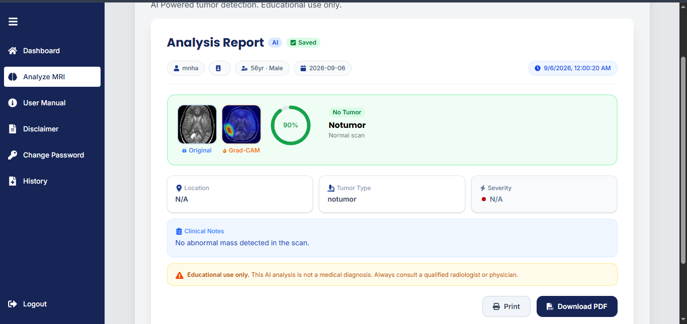
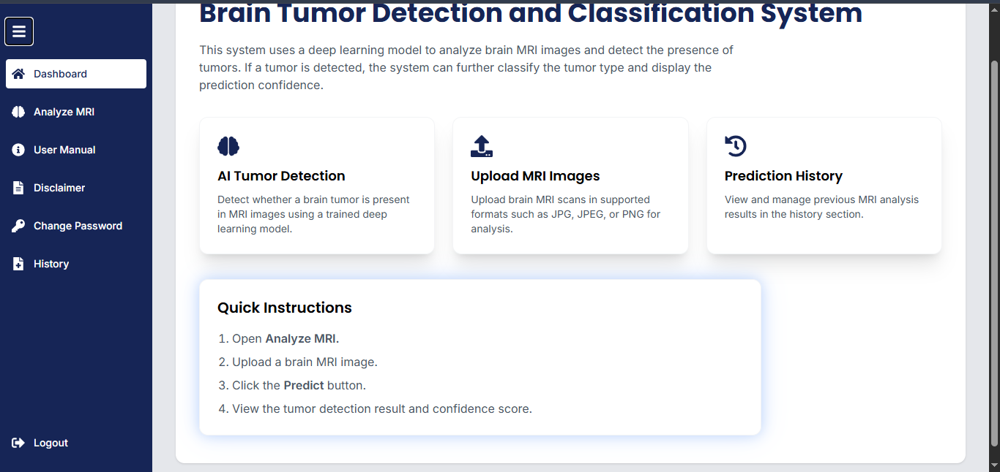
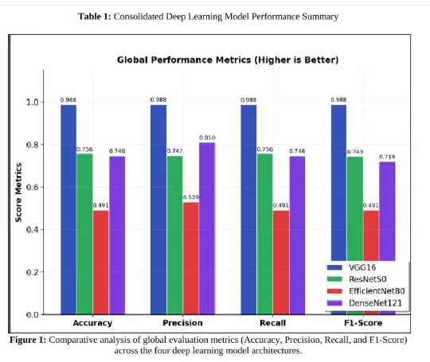
Cuts manual invoice-checking down to reviewing only what the system flags as uncertain.
An invoice-processing pipeline that reads scanned documents, extracts structured data with an LLM, and checks its own math before handing off a result. When the OCR misreads a total, it catches the mistake, re-prompts itself, and retries — up to twice — before flagging anything it's still unsure about, rather than approving it silently.
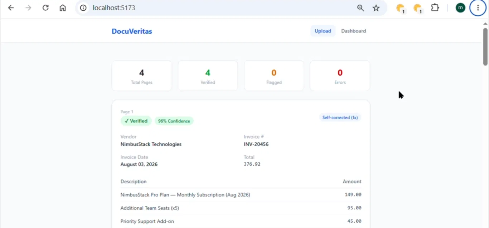
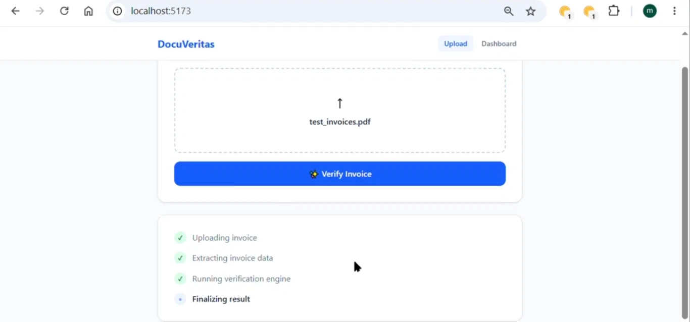
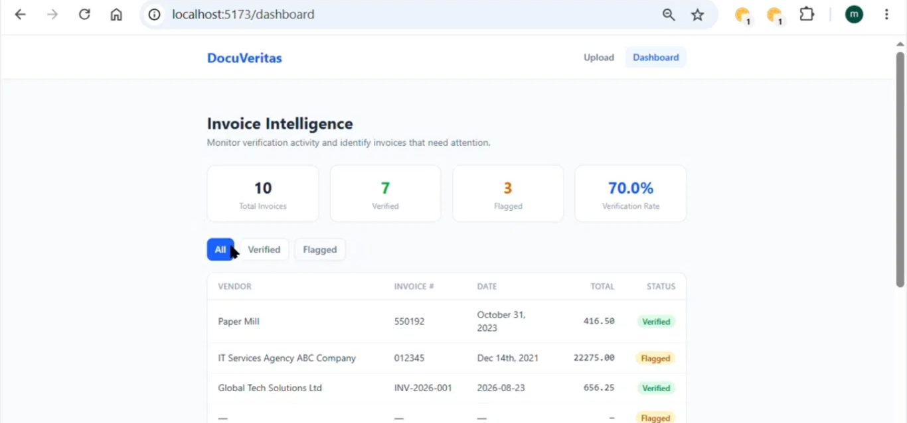
Turns raw sales CSVs into forecasts and answers, not just charts.
A multi-page Streamlit dashboard for sales data — upload a CSV and get category, region, and product breakdowns alongside a 4-month revenue forecast. Built with a regression-based forecasting module, interactive filters, and a data explorer with statistical summaries and CSV export.
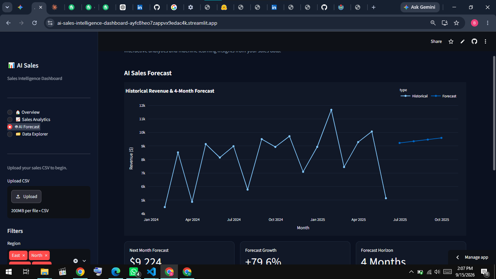
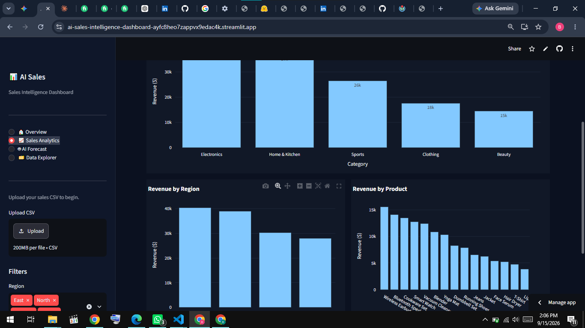
Filters junk email instantly, no manual sorting.
A lightweight NLP classifier that separates spam from legitimate email, trained with scikit-learn and deployed as a live app. Smaller in scope than the rest, but the fastest to demo end to end — paste an email, get an answer back instantly.
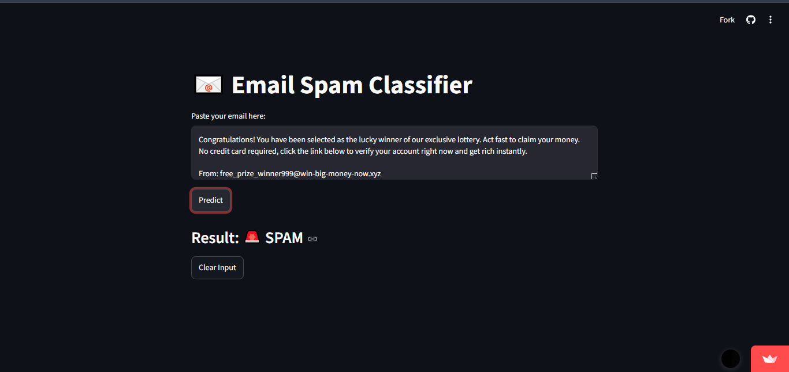
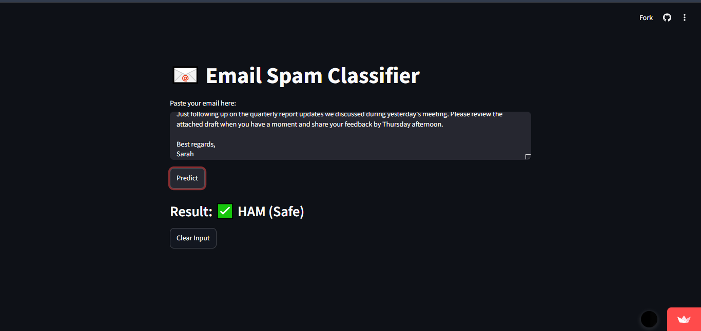
Turns a clinical checklist into an instant, same-page risk estimate — no separate app needed.
A server-rendered clinical risk tool: fill in eleven parameters — chest pain type, resting ECG, max heart rate, and others — and get a same-page prediction, no client-side JavaScript required. Built as a monolith on purpose, to solve the same class of problem with a different architecture than the notebook-based projects below.
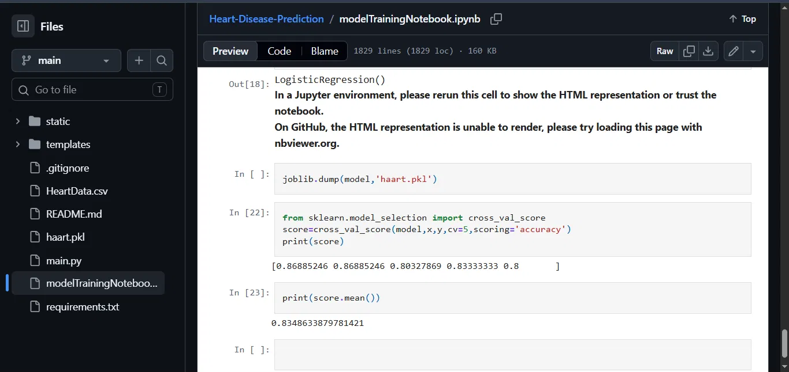
Four everyday prediction problems — who survives, what a house or car is worth, what insurance should cost — each solved and validated.
Four focused projects covering the fundamentals end to end: Titanic survival prediction, house and car price regression, and insurance cost estimation. Each takes a dataset from raw CSV through cleaning, encoding, scaling, model selection, and hyperparameter tuning to a validated result.
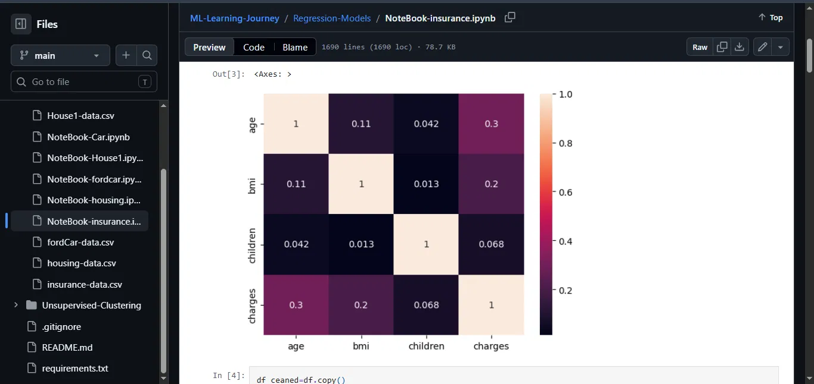
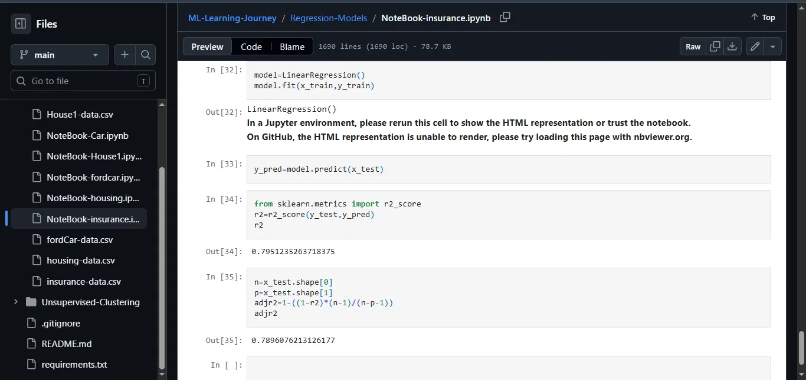
Wings School and College
Taught Computer Science fundamentals — programming logic, problem-solving, and core CS concepts — while continuing to build and ship my own ML projects on the side.
Graduated 2026.
What's underneath the systems above.
Freelance clients get a tested, documented handoff — model, API, and interface, not just a notebook. Also open to full-time and internship roles.